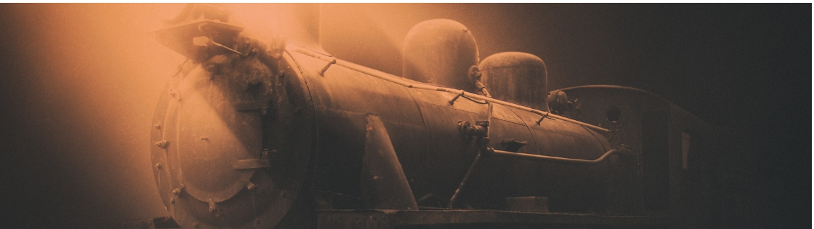

Historical fantasy
Historical fantasy is a category of fantasy and genre of historical fiction that incorporates fantastic elements (such as magic) into a more "realistic" narrative. There is much crossover with other subgenres of fantasy; those classed as Arthurian, Celtic, or Dark Ages could just as easily be placed in historical fantasy. Stories fitting this classification generally take place prior to the 20th century.
Films of this genre may have plots set in biblical times or classical antiquity. They often have plots based very loosely on mythology or legends of Greek-Roman history, or the surrounding cultures of the same era.
Arabian fantasy
After Antoine Galland's translation of One Thousand and One Nights became popular in Europe, many writers wrote fantasy based on Galland's romantic image of the Middle East and North Africa. Early examples included the satirical tales of Anthony Hamilton, and Zadig by Voltaire. English-language work in the Arabian fantasy genre includes Rasselas (1759) by Samuel Johnson, The Tales of the Genii by James Ridley (1764), Vathek by William Thomas Beckford (1786), George Meredith's The Shaving of Shagpat (1856), Khaled (1891) by F. Marion Crawford, and James Elroy Flecker's Hassan (1922).
In the late 1970s, interest in the subgenre revived with Hasan (1977) by Piers Anthony. This was followed by several other novels reworking Arabian legend: the metafictional The Arabian Nightmare (1983) by Robert Irwin, Diana Wynne Jones' children's novel Castle in the Air (1990), Tom Holt's humorous Djinn Rummy (1995) and Hilari Bell's Fall of a Kingdom.
Celtic fantasy
Celtic fantasy has links to historical fantasy and Celtic historical fiction. Celtic historical fantasy includes such works as Katharine Kerr's Deverry series, or Teresa Edgerton's Green Lion trilogy. These works are (loosely) based on ancient Celtic cultures. The separate folklore of Ireland, Wales, and Scotland has sometimes been used indiscriminately, sometimes with great effect, as in Paul Hazel's Finnbranch trilogy, Yearwood (1980), Undersea, (1982) and Winterking (1985); other writers have distinguished to use a single source.
Notable works inspired by Irish mythology included James Stephens' The Crock of Gold (1912), Lord Dunsany's The Curse of the Wise Woman (1933), Flann O'Brien's humorous At Swim-Two-Birds (1939), Pat O'Shea's The Hounds of the Morrigan (1985) and novels by Peter Tremayne, Morgan Llywelyn and Gregory Frost.
The Welsh tradition has been particularly influential, which has to do with its connection to King Arthur and its collection in a single work, the epic Mabinogion. One influential retelling of this was the fantasy work of Evangeline Walton: The Island of the Mighty, The Children of Llyr, The Song of Rhiannon, and Prince of Annwn. A notable amount of fiction has been written in the Welsh area of Celtic fantasy; other notable authors of Welsh Celtic fantasy include Kenneth Morris, John Cowper Powys, Vaughan Wilkins, Lloyd Alexander, Alan Garner, and Jenny Nimmo.
Scottish Celtic fantasy is less common, but James Hogg, John Francis Campbell (The Celtic Dragon Myth, 1911), Fiona MacLeod, William Sharp, George Mackay Brown and Deborah Turner Harris all wrote material based on Scottish myths and legends
Fantasy based on the Breton folklore branch of Celtic mythology does not often appear in the English language. However, several noted writers have utilized such material; Robert W. Chambers' The Demoiselle d'Ys (from The King in Yellow, 1895) and A. Merritt in Creep, Shadow! (1934) both drew on the Breton legend of the lost city of Ys, while "The Lay of Aotrou and Itroun" (1930) by J. R. R. Tolkien is a narrative poem based on the Breton legend of the Corrigan.
Classical fantasy
Classical fantasy is a subgenre fantasy based on the Greek and Roman myths. Symbolism from classical mythology is enormously influential on Western culture, but it was not until the 19th century that it was used in the context of literary fantasy. Richard Garnett (The Twilight of the Gods and Other Tales, 1888, revised 1903) and John Kendrick Bangs (Olympian Nights, 1902) used the Greek myths for satirical purposes.
20th-century writers who made extensive use of the subgenre included John Erksine, who continued the satirical tradition of classical fantasy in such works as The Private Life of Helen of Troy (1925) and Venus, the Lonely Goddess (1949). Eden Phillpotts used Greek myths to make philosophical points in such fantasies as Pan and the Twins (1922) and Circe's Island (1925). Jack Williamson's The Reign of Wizardry (Unknown Worlds, 1940) is an adventure story based on the legend of Theseus. Several of Thomas Burnett Swann's novels draw on Greek and Roman myth, including Day of the Minotaur (1966). The Firebrand (1986) by Marion Zimmer Bradley and Olympic Games (2004) by Leslie What are both classical fantasy tales with feminist undertones. Guy Gavriel Kay who has made a career out of historical fantasy, set his two novels in The Sarantine Mosaic series in a parallel world heavily mirroring Justinian I's Byzantium.
Fantasy of manners
Fantasy of manners, aka "mannerpunk," is a subgenre that takes place within a strict, elaborate, and hierarchical social structure. Inspired by the social novels and the comedy of manners of such authors as Jane Austen and Oscar Wilde, fantasy of manners involves class struggles among genteel characters in urban environments, and while duels are permitted, witty repartee often substitutes for physical conflict. Examples of fantasy of manners include Swordspoint by Ellen Kushner and Jonathan Strange & Mr Norrell by Susanna Clarke.
Fantasy steampunk
Fantasy steampunk is another subgenre of historical fantasy, generally set in the Victorian or Edwardian eras. Steam technology, mixed with Victorian or Gothic-style architecture and technology, is the most widely recognized interpretation of this genre. One of the most popular characteristics of steampunk is the appearance of naked clockwork, rusty gears, and engines. Some works in this genre are alternate history.
Gaslamp fantasy
Gaslamp fantasy is a subgenre to both steampunk and historical fantasy that takes place in an alternative universe based on Victorian or Edwardian eras. However, magic plays a more important role than the era's mechanical technology.
Gunpowder fantasy
Similar to steampunk, gunpowder fantasy is considered a step below its more popular cousin. Gunpowder fantasy combines elements of epic fantasy (magic, mythical creatures, elves, epic scale) with rifles and railroads. It is a relatively new subgenre, but has been picking up popularity. It varies from steampunk in that it stays away from the fantastic inventions (airships, machines, etc.) that are common in steampunk. It is also sometimes called "muskets and magic". Gunpowder fantasy is generally set in a world with roughly equivalent technology to the world in the 17th through 19th centuries, particularly the latter eras. Typically, gunpowder fantasy also includes elements of real-world technology such as steam power, telegraphy and in some cases early telephones or combustion engines.
Gunpowder fantasy examples include Monster Blood Tattoo Series by D. M. Cornish (2006–2010), Fullmetal Alchemist by Hiromu Arakawa (2001–2010), Terrarch Tetralogy by William King (2011–), and The Powder Mage trilogy, Brian McClellan (2013–2015)
Medieval fantasy
Medieval fantasy encompasses works where aspects of medieval history such as legends from the Middle Ages, and aesthetics such as medievalisms, overlap with fantasy. According to the Getty Museum, it is contrasted from folklore which is set in a "familiar world with stock characters and plots". Subgenres of fantasy such as Gothic fiction, sword and sorcery, fairy tales, high fantasy, and low fantasy, can also overlap with medieval fantasy.
The broad genre of medieval fantasy is common among role-playing games and high fantasy literature. Notable examples of medieval fantasy games the Getty Museum has listed include the Legend of Zelda series (1986-) and Dungeons & Dragons (1974). Examples of literature listed include the Lord of the Rings trilogy (1954-1955) and A Song of Ice and Fire (1996-).
Prehistoric fantasy
Stories set in prehistoric times and depicting the lives of prehistoric people. Prehistoric fantasy examples include the Earth's Children series by Jean M. Auel (1980-2011) and the Chronicles of Ancient Darkness by Michelle Paver.
Wuxia
Wǔxiá, literally meaning "martial (arts) heroes", is a subgenre of the quasi-fantasy and martial arts genre in literature, television and cinema. Wǔxiá figures prominently in the popular culture of Chinese-speaking areas, and the most important writers have devoted followings.
The wǔxiá genre is a blend of the philosophy of xiá (俠, "honor code", "an ethical person", "a hero"), and China's long history in wǔshù ("kung fu" or "martial arts"). A martial artist who follows the code of xiá is called a swordsman, or xiákè (俠客/侠客, literally "chivalrous guest"). Japan's samurai bushidō traditions, England's knight chivalry traditions, and America's gunslinger Western traditions all share some aspects with China's swordsman xiá traditions. The swordsman, however, need not serve a lord or hold any military power and they are not required to be from an aristocratic class.